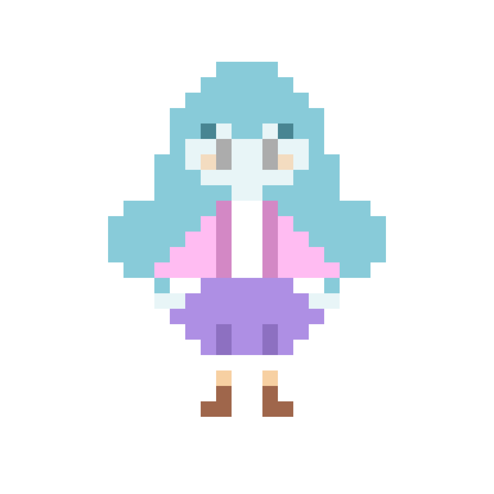

Empyrea Eteri Selassie, also known as 'Emi', is a young genasi who works at the local blacksmith of Eastfall.
Most of her time is spent working on Wabee, her beloved mechanical bee.
What will be Emi's new invention? Share your ideas with her by clicking on the link below, and see if it comes to life one day!